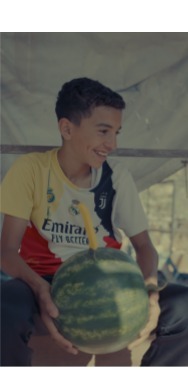
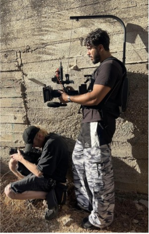
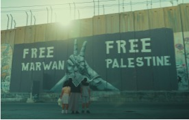
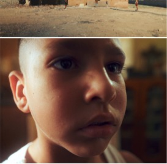
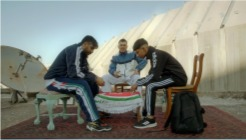
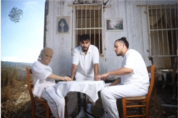
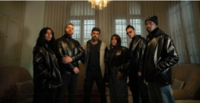
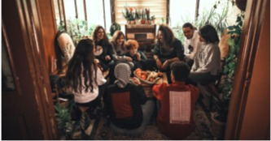

فيلم كأس العالم ٢٠٢٦
صوّرت الفيلم مع وديع بإمكانيات بسيطة. بعد التصوير، اشترينا ثلاث بيتزات للأطفال، وكانت تلك ميزانيتنا.
شاهد الفيلم ، يفتح في نافذة جديدةFILMMAKER & PRODUCTION MANAGER · PALESTINE
صانع أفلام من مخيم بلاطة، فلسطين.
أفلام وصور من المكان الذي أعرفه.
حكايات تحمل شيئًا من فلسطين.

SELECTED WORK / 01
أفلام قصيرة، أعمال موسيقية، ومشاريع إنتاج فني من تجربتي في فلسطين.

صوّرت الفيلم مع وديع بإمكانيات بسيطة. بعد التصوير، اشترينا ثلاث بيتزات للأطفال، وكانت تلك ميزانيتنا.
شاهد الفيلم ، يفتح في نافذة جديدة
فيلم قصير بالتعاون مع Free Marwan Now. أعاد تصوير مشهد الاعتقال إلى ذاكرتي لحظات اعتقال والدي وأبناء عمي خلال الانتفاضة.

تتحول لعبة طفل بالحجارة إلى حكاية عن القيود والحرية والهوية. الفيلم من إخراج أحمد ناقوري، وتصوير علاء الدين.

عمل موسيقي عن واقع الشباب في فلسطين. توليت إدارة الإنتاج وتنسيق التصوير والفريق والمواقع وسط صعوبات التنقل في الضفة الغربية.
شاهد الفيديو ، يفتح في نافذة جديدة
أسسته مع أصدقاء لبناء مساحة مستقلة للموسيقى والفيديو. توليت إدارة الإنتاج؛ وأنجز الفريق ألبومًا وألبومًا مصغرًا و19 تراكًا منفردًا و9 فيديو كليبات.

أسسته من سؤال «الدار وين؟» عن المكان والانتماء. بنينا إنتاجًا للملابس داخل فلسطين، من التصميم والخياطة إلى الطباعة والتطريز، بالتعاون مع فنانين من عدة بلدان.
ALSO / 07
إلى جانب المشاريع السينمائية، أعمل في التصوير والإعلانات. يتضمن ملف أعمالي نماذج من هذا العمل.
TALE / 08
شاركت مع الفنان روري في مشروع عن علاقتنا بالبحر. جمعت دفاتر من أشخاص في المخيم عن ذكرياتهم، وصوّرت فيلمًا قصيرًا مع ابن أخي جمال داخل منزل عرضنا فيه صورة البحر على الجدار.

ABOUT / 02
بدأت رحلتي الفنية عام 2005، في التاسعة من عمري، من الدبكة الشعبية في مخيم بلاطة. تعلمت في مساحات فنية في نابلس ومخيمي بلاطة وعسكر، ثم بدأت بعد عام 2014 تدريب الدبكة والمشاركة في المبادرات الثقافية.
لم أدرس السينما أكاديميًا. بدأت تصوير الفيديو بالهاتف، ثم طورت تجربتي بكاميرا سينمائية. أعمل اليوم في التصوير والإعلانات، وأحاول خلق مساحة للتجريب وصناعة أفلام شخصية تنطلق من فلسطين.